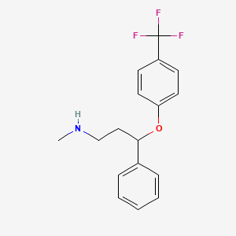
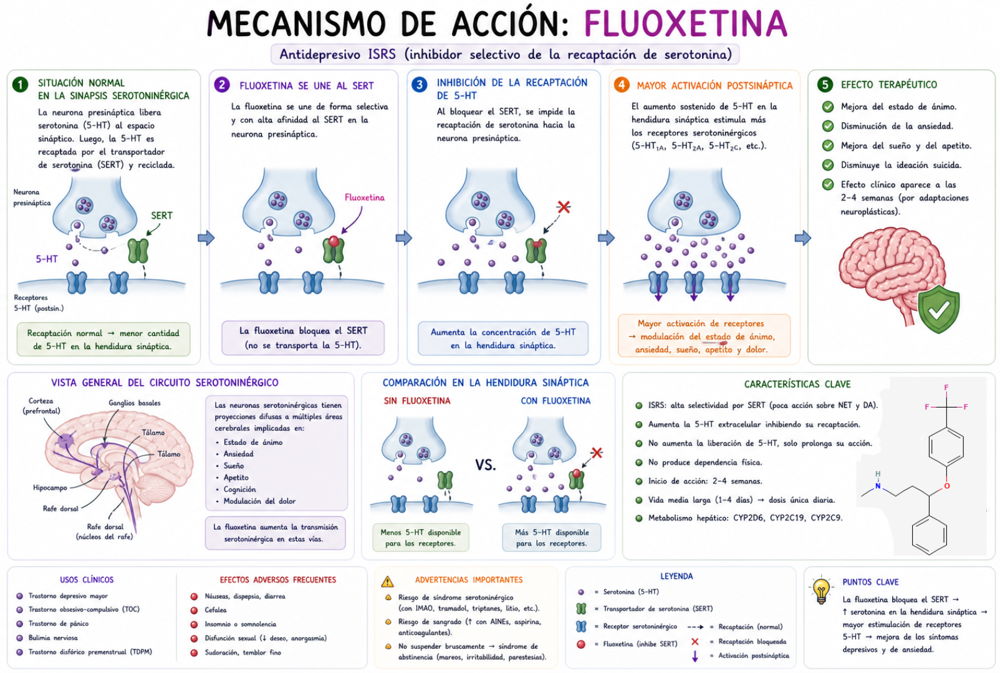

La Fluoxetina atraviesa la barrera hematoencefálica y actúa principalmente en neuronas serotoninérgicas del sistema nervioso central.
Una vez en la terminal presináptica, se une de manera selectiva al transportador de recaptación de serotonina (SERT), inhibiendo su función e impidiendo el retorno de la serotonina hacia el interior de la neurona.
En condiciones normales, la serotonina liberada en la hendidura sináptica es rápidamente recaptada por SERT, limitando su acción; sin embargo, la presencia de fluoxetina aumenta su permanencia en el espacio sináptico.
Como consecuencia, se incrementa la concentración de serotonina disponible para unirse a receptores postsinápticos, potenciando la neurotransmisión serotoninérgica en circuitos relacionados con el estado de ánimo, la ansiedad y otras funciones emocionales.
Con el uso crónico, también se producen adaptaciones como la desensibilización de autorreceptores serotoninérgicos presinápticos, lo que favorece una mayor liberación sostenida de serotonina.
Como resultado final, la fluoxetina actúa como inhibidor selectivo de la recaptación de serotonina (ISRS), bloquea SERT, aumenta la serotonina sináptica y potencia la neurotransmisión serotoninérgica.
La Fluoxetina es un inhibidor selectivo de la recaptación de serotonina, bloquea el transportador SERT y evita que la serotonina sea recaptada por la neurona presináptica, lo que aumenta la concentración de serotonina en la sinapsis, potencia la neurotransmisión serotoninérgica y mejora el estado de ánimo y la ansiedad.
Audio explicativo
Material visual

